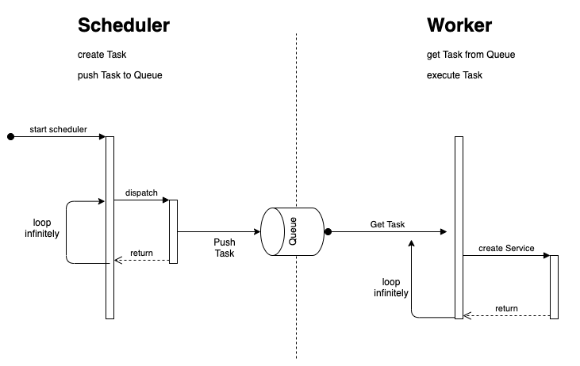
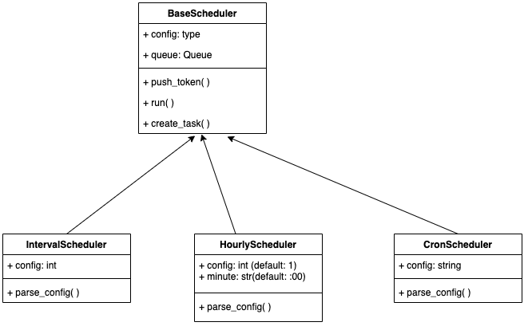

Scheduler & Worker
Scheduler and Worker Development Pattern
1. Architecture#
The Scheduler and Worker are two separated micro-services which communicates each other via queue.
Scheduler specifies task(a.k.a. SpaceONE Pipeline Template) then push task to queue. Worker gets task from queue then execute task.

2. Example configuration#
Scheduler configuration#
The Scheduler needs queue and scheduler function which create scheduling task.
This is inventory-scheduler configuration.
QUEUES:
collector_q:
backend: spaceone.core.queue.redis_queue.RedisQueue
host: redis
port: 6379
channel: collector
SCHEDULERS:
hourly_scheduler:
backend: spaceone.inventory.scheduler.inventory_scheduler.InventoryHourlyScheduler
queue: collector_q
interval: 1
minute: ':01'
TOKEN: eyJhbGciOiJSUzI1NiIsInR5cCI6IkpXVC....
Worker configuration#
The Worker needs queue and worker function which executes scheduling task.
This is inventory-worker configuration.
QUEUES:
collector_q:
backend: spaceone.core.queue.redis_queue.RedisQueue
host: redis
port: 6379
channel: collector
WORKERS:
collector_worker:
backend: spaceone.core.scheduler.worker.BaseWorker
queue: collector_q
pool: 1
3. Start Scheduler or Worker#
Base on configuration, server can be scheduler or worker. The commandline for Scheduler or Worker is same.
spaceone scheduler <service name>
For example, inventory Worker is started by spaceone scheduler spaceone.inventory -c /opt/inventory.yml.
You can start Scheduler and Worker together, if your configuration includes QUEUES, SCHEDULERS and WORKERS.
4. Scheduler Development#
Scheduler Class#
Scheduler class is defined at spaceone/core/schduler/scheduler.py at python-core repository.

If you want to create new scheduler, inherit BaseScheduler class. Each implemented class should implement create_task(). The create_task() function is automatically called in-time which is specified at Scheduler configuration.
For example, if you inherit HourlyScheduler, the create_task is called in every N hours. If you inherit IntervalScheduler, the create_task is called in every N seconds.
Example: InventoryHourlyScheduler#
InventoryHourlyScheduler is called at every 01 minutes like from 00:01, 01:01 to 23:01. The create_task() should create list of STP(SpaceONE Template Pipeline).
file:
def create_task(self):
schedules = self.list_schedules()
result = []
for schedule in schedules:
stp = self._create_job_request(schedule)
result.append(stp)
return result
4. SpaceONE Template Pipeline#
You have to specify task based one STP(SpaceONE Tempalte Pipeline). The single STP has following rule:
{
"name": Pipeline Name,
"version": "v1",
"executionEngine": "BaseWorker",
"stages": [
{
"locator": "SERVICE" | "MANAGER" | "CONNECTOR", # Calling Object
"name" : "XXXXService", # Calling Object name
"metadata" : {Metadata(dict)}, # Metadata, Service Call needs metadata
"method": Method name, # method name
"params": { Real Parameter } # parameter
},
{
...
}
]
}
For example, if you want to call collect API in inventory, the STP has
{
"name": "Inventory Collect",
"version": "v1",
"executionEngine": "BaseWorker",
"stages": [
{
"locator": "SERVICE",
"name" : "CollectorService",
"metadata": {'token': 'xxxxxx', 'user_id': 'yyyyy'},
"method": "collect",
"params": {'params': {
'collector_id': 'xxxxx',
'collector_mode': 'ALL',
'filter': {},
'domain_id': 'dom-xxxx'
}
}
}
]
}
5. Worker Development#
BaseWorker is just executing STP. For example, if inventory-worker get Inventory Collect task from Queue. It execute method based on specification.